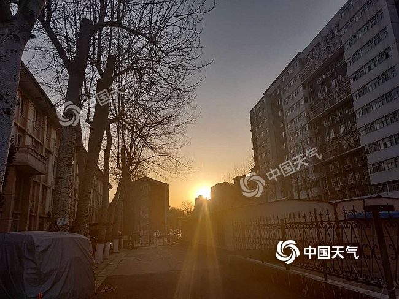

中国天气网讯 预计本周，北京天气以晴到多云为主，气温波动上升，昼夜温差大，北风活动频繁，早晚外出注意添衣，同时注意用火安全。

预计今天白天，北京天气晴间多云，北转南风2、3间4级，最高气温16℃；夜间晴，南转北风2、3级，最低气温3℃。
总体来看，本周北京天气会以晴到多云为主，气温波动上升，中午前后暖意十足，但早晚体感仍然较冷，昼夜温差大，早晚外出注意添加衣物。
由于本周北风活动频繁，目前北京正处于森林火险橙色预警中，天干物燥，需注意防火。请关注临近预报预警信息，做好对大风天气的防范。
与此同时，随着天气回暖，京城的花卉也相继开放，空气中的花粉浓度会加速上升，请对花粉过敏的公众注意做好健康防护。